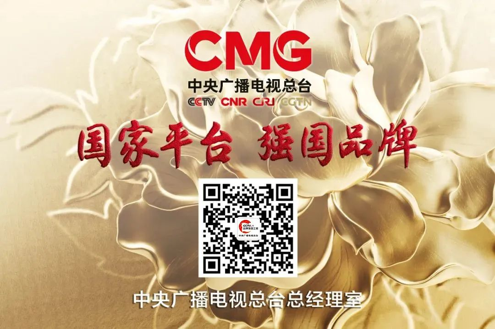
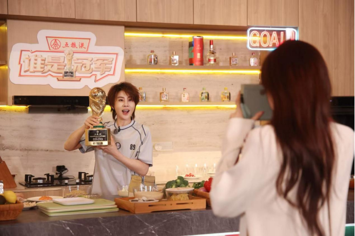

案例发生了什么
五粮液以 FIFA 授权联名酒、金球和大力神杯造型产品，将世界杯的冠军仪式感转译为白酒礼赠、收藏和竞猜内容。
它解决的策略问题
这页要回答的不是“五粮液：FIFA 联名酒与大力神杯 是否参与世界杯”，而是它如何通过“官方授权 / 礼赠收藏”回应“让冠军仪式感服务高端礼赠和商品化”这一业务问题。
资源如何变成行动
官方授权 / 礼赠收藏
围绕“让冠军仪式感服务高端礼赠和商品化”配置球星、球队、授权、商品、渠道或海外服务，而不是只做单一海报。
根据品类落在门店、货架、礼赠、家庭观赛、出行或海外本地市场的具体触点。
通过收藏、复购、线索、渠道或交付案例，决定这项资源能否留下来。
动作拆解
- 把授权做成不同价格和仪式感层次的商品矩阵。
- 用冠军国家队等机制增加收藏与分享理由。
- 以总台节目和竞猜进一步连接大小屏互动。
深度补充：从动作到复盘
以下字段用于把案例从“看过一个创意”推进到可执行、可衡量、可继续补证的研究对象。
让冠军仪式感服务高端礼赠和商品化
中国球迷、品牌核心消费者，以及与出海业务相关的海外目标人群
官方授权 / 礼赠收藏
球星/球队/授权内容、电商、门店、大小屏与海外渠道
搜索、到店、商品成交、会员沉淀与重点海外市场认知
高端礼赠品借赛事的价值，不在热闹，而在把稀缺、仪式与社交表达做成商品。
补齐“五粮液：FIFA 联名酒与大力神杯”的品牌/权利方原始发布、视频首帧与完整片、线下执行现场、投放日期、市场范围及可追溯效果口径。
传播与业务机制
国际赛事提供公共话题，中国品牌需要用明确的本土产品语言或海外市场语言完成翻译。
低门槛商品、互动、内容或线下体验负责让泛球迷也有参与理由。
真正的回报通常发生在商品、渠道、服务或海外市场，而不只在国内声量。
需要品牌、渠道、法务、供应链与内容团队提前协调赛程和物料。
适用条件、风险与证据
- 先明确目标是国内动销、出海认知、渠道关系还是授权商品，而不是全部都做。
- 球星或球队的赛果只是放大器，必须准备常态内容和转化出口。
- 对授权范围、地域、肖像和商品库存建立可追溯台账。
品牌与权威来源物料
这里只展示可追溯到品牌、权利方、官方账号或明确注明原始出处的真实物料；研究图卡不计入案例图片。


官方资料、结果口径与下一步
已验证事实
- 总台资料将五粮液列为其 2026 世界杯转播合作伙伴，并确认品牌同时进入 CCTV-5《豪门盛宴》和央视频《谁是冠军》。
- 2026 年 7 月 1 日的总台合作资料将五粮液称为获得 FIFA 官方授权的中国白酒品牌；当前已归档大力神杯造型与授权商品视觉。
可追溯结果口径
- 现有公开材料可验证授权身份与商品形态，但未披露单品发售数量、售罄率、渠道结构或收藏溢价。
原始来源
来源链接优先指向品牌、权利方或持权媒体官方页面；品牌自述数据按原口径记录，不视作独立审计结果。